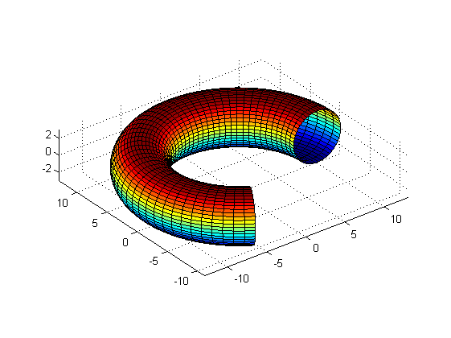
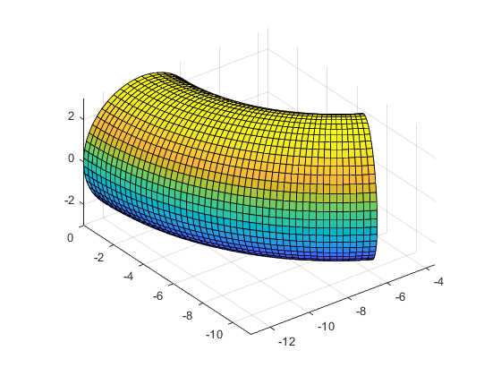

Contents
function demoRevolutionSurface
%DEMOREVOLUTIONSURFACE One-line description here, please. % output = demoRevolutionSurface(input) % % Example % demoRevolutionSurface % % See also % % ------ % Author: David Legland % e-mail: david.legland@inra.fr % Created: 2007-04-20 % Copyright 2007 INRA - BIA PV Nantes - MIAJ Jouy-en-Josas.
Draw a torus with vertical axis as revolution axis
circle = circleToPolygon([10 0 3], 50);
[x, y, t] = revolutionSurface(circle, linspace(0, 4*pi/3, 50));
figure;
surf(x, y, t);
axis equal;
 Draw a torus with horizontal axis as revolution axis
circle = circleToPolygon([0 10 3], 50);
[x, y, t] = revolutionSurface(circle, [0 0 1 0], linspace(0, pi/3, 50));
figure;
surf(x, y, t);
axis equal;
drawnow;
 end
Inner function to avoid call to geom2d module
function varargout = circleToPolygon(circle, varargin) %CIRCLETOPOLYGON Convert a circle into a series of points % % P = circleToPolygon(CIRC, N); % Converts the circle CIRC into an array of (N+1)-by-2 of double, % containing x and y positions of vertices. % CIRC is given as [x0 y0 r], where x0 and y0 are coordinate of center, % and r is the radius. % The resulting polygon is closed (first and last vertices are the same). % % P = circleToPolygon(CIRCLE); % uses a default value of N=64 vertices. % % Example % circle = circleToPolygon([10 0 5], 16); % figure; % drawPolygon(circle); % % See also: % circles2d, polygons2d, circleArcToPolyline, ellipseToPolygon % % % --------- % author : David Legland % created the 06/04/2005. % Copyright 2010 INRA - Cepia Software Platform. % % HISTORY % 2007-04-20 return a closed polygon with N+1 vertices, use default N=64 % 2011-12-09 rename to 'circleToPolygon' % determines number of points N = 64; if ~isempty(varargin) N = varargin{1}; end % create circle t = linspace(0, 2*pi, N+1)'; x = circle(1) + circle(3) * cos(t); y = circle(2) + circle(3) * sin(t); if nargout == 1 varargout{1} = [x y]; elseif nargout == 2 varargout{1} = x; varargout{2} = y; end end